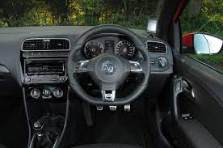

Welcome To Auto4Sale
WHERE WE SHOWCASE THE MOST FEATURED CARS IN THE WORLD AND THE MOST AFFORDABLE THAT SUITS YOUR BUDGET.
BUYING OR TRADING IN? WHATEVER IT IS? WE ARE HERE FOT YOU.WE OFFER ABSOLUTLEY SPECTACULAR CARS AND WE WILL OFFER YOU A PRICE THAT SUITS YOUR BUDGET.WE ARE HERE TO SERVE OUR CUSTOMERS NEEDS FOR QUALITY,RELIABLE VEHICLES AT FAIR PRICE.WANT TO TARDE? NO PROBLEM!!WE WILL OFFER YOU THE BEST VALUE FOR YOUR CAR.


Volkswagen Polo R-line (2015)
The Polo R needs to be much more fun
The Volkswagen Polo R-line. It’s a sportified supermini that previews a potential full-strength Polo R via an insurance-friendly trim level. Your only engine choice is a 1.2-litre turbo petrol mated to a six-speed manual gearbox
Listen to the 770 CV naturally aspirated V12 engine. Imagine the roar of the Aventador SVJ Roadster merging with that of the wind as the car reaches 217 mph (350 km/h)—an experience of pure adrenaline and unfettered joy.
Engine, performance and 0-60 time
Like the VW Scirocco R-line, the only tweaks over a standard Polo are stylistic ones. There’s a set of 16in ‘Mallory’ alloy wheels, an R-line styling pack – with more aggressive bumpers, side sills and grille – and a gamut of R badges inside and out. It treads the line between supermini and full-pelt hot hatch quite nicely.
Under the skin things aren’t too revolutionary, a 1.2-litre four-cylinder turbo engine driving the front wheels via a manual gearbox. It’s a smart little engine, though, combining a claimed 53.3mpg with performance that makes its 9.7sec 0-62mph time seem modest.
What’s it like to drive?
With no suspension tweaks, a smidge over 100bhp and very economy-biased gearing, this hints at a Polo R only aesthetically. But that’s not to say it’s bad to drive – just a little uninteresting.
It steers keenly, handles tidily and is a predictable and relatively satisfying car to drive briskly. It just doesn’t entertain like some of its rivals can, but you can’t argue with its refinement. The ride is unfailingly composed and sitting at just 2500rpm at 70mph in top gear, it’s a more capable cruiser than its diminutive engine size might suggest.
The engine is one of VW’s best, in fact; it happily revs past 6000rpm (sounding quite rorty in its upper reaches) and possesses an even spread of shove. The gearing is very long, though – third gear stretches past 90mph, which feels quite excessive in a car that can’t reach 120mph. The pay-off is economy, of course. We managed 48mpg in mixed, real-world driving, but this will drop into the mid-30s if you’re frequently nudging the red line.
Price R490 000